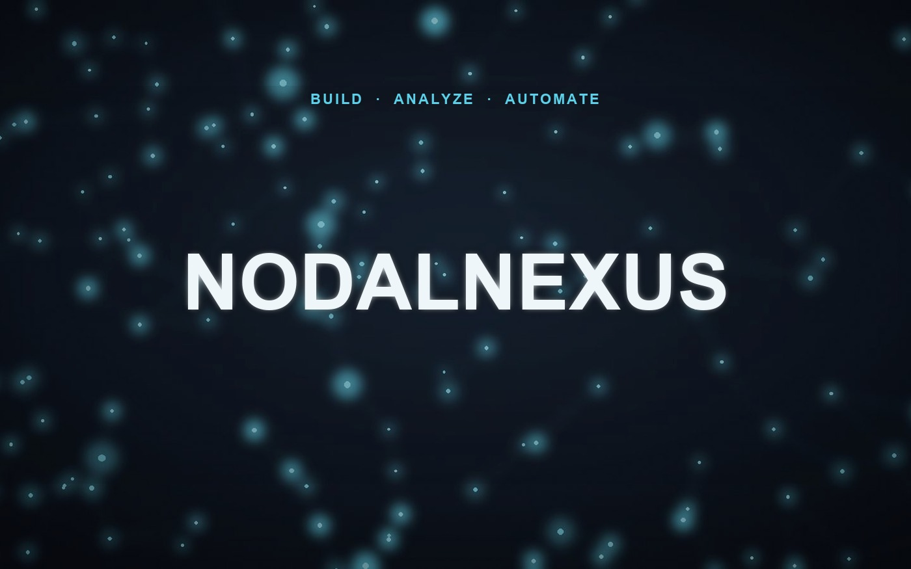

AI Engineering Studio
NodalNexus
Why I built it
I kept seeing AI automation that worked in a demo and broke in production. I wanted a way to build AI systems that stay reliable once real data hits them.
How I built it
I designed a staged delivery process: every project moves through intake, scope, build, and verification, with one reviewable artifact at each stage, so nothing ships without a paper trail.
Pythonn8nNext.jsMCP Servers